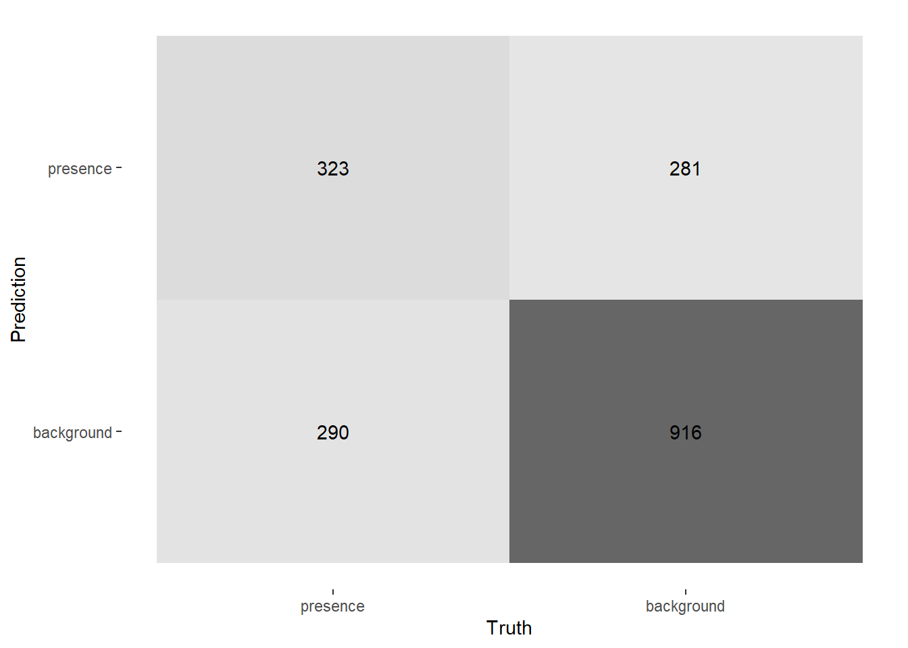
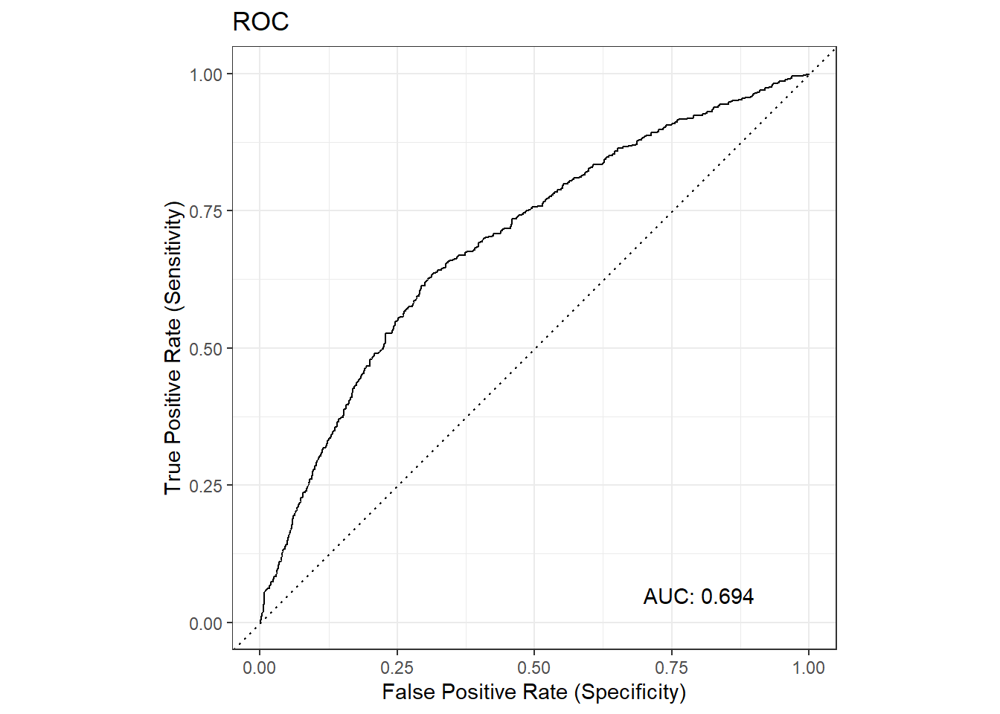
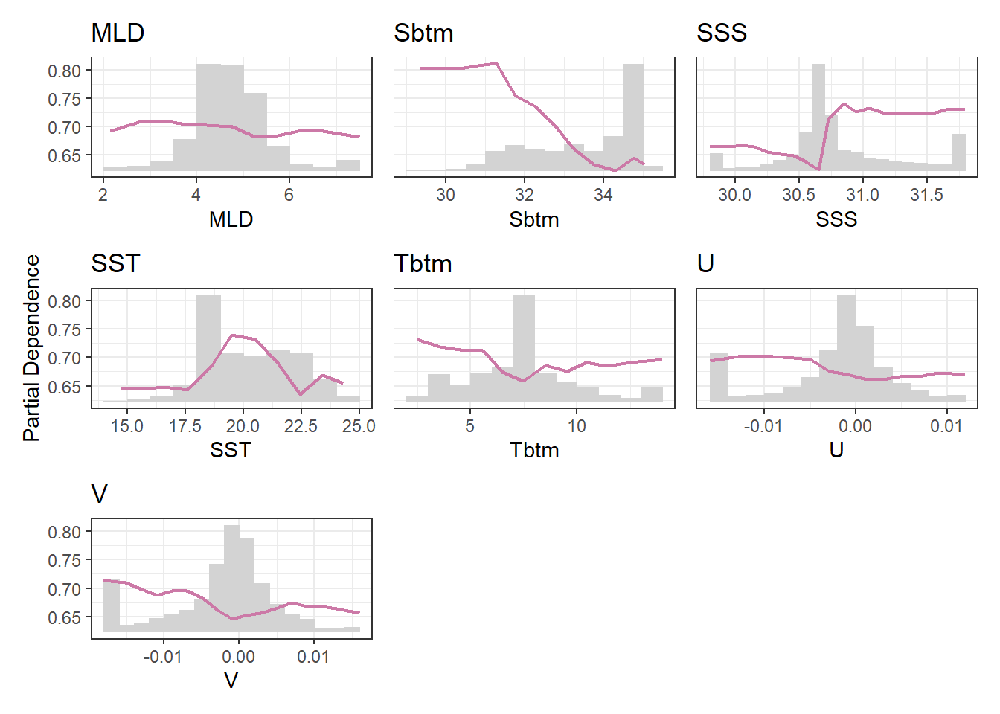

source("setup.R")Models
- All models are wrong, but some are useful.
- George Box
Modeling starts with a collection of observations (presence and background for us!) and ends up with a collection of coeefficients that can be used with one or more formulas to make a predicition for the past, the present or the future. We are using modeling specifically to make habitat suitability maps for select species under two climate scenarios (RCP45 and RCP85) at two different times (2055 and 2075) in the future.
We can choose from a number of different models: random forest “rf”, maximum entropy “maxent” or “maxnet”, boosted regression trees “brt”, general linear models “glm”, etc. The point of each is to make a mathematical representation of natural occurrences. It is important to consider what those occurences might be - categorical like labels? likelihoods like probabilities? continuous like measurements? Here are examples of each…
- Categorical
- two class labels: “present/absence”, “red/green”, “shell/no shell”, “alive/dead”
- multi-class labels: “vanilla/chocolate/strawberry”, “immature/mature/aged”
- Likelihood and Probability
- probability: “50% chance of rain”, “80% chance of a fatal fall”
- relativity: “low likelihood of encounter”, “some likelihood of encounter”
- Continuous
- abundance: “48.2 mice per km^2”, “10,500 copepods per m^3”
- rate: “50 knot winds”, “28.2 Svedrups”
- measure: “3.2 cm of rain”, “12.1 grams of carbon”
We are modeling with known observations (presences) and a sampling of the background, so we are trying to model a likelihood that a species will be encountered (and reported) relative to the environmental conditions. We are looking for a model that can produce relative likelihood of an encounter that results in a report.
We’ll be using a random forest model (rf). We were inspired to follow this route by using this tidy models tutorial prepared by our colleague Omi Johnson.
1 Setup
As always, we start by running our setup function. Start RStudio/R, and reload your project with the menu File > Recent Projects.
2 Load data - choose a month and sampling approach
Let’s load what we need to build a model for August using the greedy sampling technique. We’ll also need the model configuration (which is “g_Aug”). And we’ll need the covariate data.
model_input = read_model_input(scientificname = "Mola mola",
approach = "greedy",
mon = "Aug")
cfg = read_configuration(version = "g_Aug")
db = brickman_database()
depth = read_brickman(db |> filter(scenario == "STATIC", var == "depth"))
covars = read_brickman(db |> filter(scenario == "PRESENT", interval == "mon"))Of course we need covariates for August only, for this we can use a function we prepared earlier, prep_model_data(). Note the we specifically ask for a plain table which means we are dropping the spatial information for now.
all_data = prep_model_data(model_input,
month = "Aug",
covars = covars,
depth = depth,
form = "table")
all_data# A tibble: 7,272 × 10
class MLD Sbtm SSS SST Tbtm U V Xbtm depth
* <fct> <dbl> <dbl> <dbl> <dbl> <dbl> <dbl> <dbl> <dbl> <dbl>
1 presence 5.17 35.0 31.6 23.3 7.50 -0.00161 -0.00340 0.00133 304.
2 presence 4.25 32.8 30.6 21.6 8.15 -0.00420 -0.00206 0.00166 71.6
3 presence 4.64 34.0 30.7 20.2 7.05 0.00168 0.00148 0.000793 138.
4 presence 5.58 34.6 30.7 18.8 7.55 0.00267 -0.000410 0.000957 234.
5 presence 5.04 34.7 30.7 19.0 7.43 -0.00619 -0.00121 0.00224 205.
6 presence 4.01 32.4 30.6 22.0 8.22 -0.00344 -0.000859 0.00126 62.6
7 presence 4.10 32.9 30.5 21.8 8.34 -0.00565 -0.00226 0.00216 71.3
8 presence 3.82 32.4 30.3 18.2 3.56 -0.00702 -0.00431 0.00293 81.6
9 presence 3.20 32.4 30.6 17.9 5.73 0.000275 -0.00101 0.000372 70.6
10 presence 4.02 32.9 30.6 22.0 8.62 -0.000900 -0.00148 0.000614 64.9
# ℹ 7,262 more rows3 Split the data set into testing and training data sets
We will split out a random sample of our dataset to a larger set used for training the model, and a smaller set we withhold to use for later testing of the model. Since we have labeled data (“presence” and “background”) we want to be sure we sample these in proportion, for that we’ll indicate that the data are stratified (into just two groups). Let’s first determine what the proportion is before splitting.
# A little function to compute the ratio of presences to background
# @param x table with a "class" column
# @return numeric ratio presences/background
get_ratio = function(x){
counts = count(x, class)
np = filter(counts, class == "presence") |> pull(n)
nb = filter(counts, class == "background") |> pull(n)
return(np/nb)
}
cat("ratio of presence/background in full data set:", get_ratio(all_data), "\n")ratio of presence/background in full data set: 0.50934 Now let’s make the split with the training set comprising 75% of all_data. Note that we specifically identify class as the strata (or grouping) variable.
split_data = initial_split(all_data,
prop = 3/4,
strata = class)
split_data<Training/Testing/Total>
<5453/1819/7272>It prints the counts of the training data, the testing data and the entire data set. We can extract the training data and testing data using the training() and testing() functions. Let’s check the ratios for those..
cat("ratio of presence/background in training data:",
training(split_data) |> get_ratio(), "\n")ratio of presence/background in training data: 0.5092721 cat("ratio of presence/background in testing data:",
testing(split_data) |> get_ratio(), "\n")ratio of presence/background in testing data: 0.5095436 OK! The samples observed the original proportion of presence/background.
Note! Did you notice that the function is called
initial_split(), which implies a subsequent split - what do you suppose that is about?
4 Create a workflow
workflows are containers for storing the data pre-processing steps and model specifications. Not too long ago it was quite a challenge to to keep track of all the bits and pieces required to make good forecasts. The advent of workflows greatly simplifies the process. A workflow will house two important items for us: a recipe and a model. For now, we’ll create an empty workflow, then add to it as needed. At the very end, we’ll save the workflow.
wflow = workflow()That’s it!
5 Build a recipe
The first thing we’ll add tot he workflow is a recipe. A recipe is a blueprint that guides the data handling and modeling process.
A recipe at a bare minimum needs to know two things: what data it has to work with and what is the relationship among the variables within the data. The latter is expressed as a formula, very similar to how we specify the formula of a line with y = mx + b or a parabola y = ax^2 + bx + c.
Note
We often think of formulas as left-hand side (LHS) and right-hand side (RHS) equalities. And usually, the LHS is the outcome while the RHS is about the inputs. For our modeling, the outcome is to predict the across the entire domain. We can generalize the idea with the “is a function of” operator ~ (the tilde). For the classic formula for a line it like this… y ~ x and a parabola is also y ~ x.
Consider a situation where we have reduced all of the suitable variables to Sbtm, Tbtm, MLD andXbtm, which we have in a table along with a class variable. In our case we have the outcome is an prediction of class it is a function of variables like Sbtm, Tbtm, MLD, Xbtm, etc. This formula would look like y ~ Sbtm + Tbtm + MLD + Xbtm. Unlike the specific equation for a line or parabola, we don’t pretend to know what coefficients, powers and that sort of stuff looks like. We are just saying that class is a function of all of those variables (somehow).
In the case here where the outcome (class) is a function of all other variables in the table, we have a nice short hand. class ~ . where the dot means “every other variable”.
First we fish out of our split data the training data, and then drop the spatial information.
tr_data = training(split_data)
tr_data# A tibble: 5,453 × 10
class MLD Sbtm SSS SST Tbtm U V Xbtm depth
<fct> <dbl> <dbl> <dbl> <dbl> <dbl> <dbl> <dbl> <dbl> <dbl>
1 background 3.53 29.5 29.0 17.7 15.6 -0.00355 0.000511 1.27e-3 13.5
2 background 3.92 31.1 28.9 17.9 7.64 -0.0000966 0.00158 5.63e-4 33.6
3 background 4.51 28.6 28.6 19.8 19.9 0.00193 0.00234 1.08e-3 5
4 background 4.56 28.4 28.3 20.2 20.3 0.00202 -0.00158 9.08e-4 5
5 background 4.95 28.0 28.0 20.8 20.8 -0.000153 -0.00000933 5.44e-5 5.03
6 background 3.63 30.1 29.3 17.6 13.6 -0.000100 0.00167 5.93e-4 17.8
7 background 3.32 31.2 29.3 17.3 6.93 0.0000920 0.000934 3.33e-4 35.2
8 background 4.46 32.1 29.3 18.0 5.33 -0.000284 0.00229 8.17e-4 59.4
9 background 4.34 32.4 29.2 18.1 5.50 -0.000321 0.00283 1.01e-3 64.9
10 background 4.01 32.4 29.1 18.1 5.53 0.000172 0.00369 1.31e-3 68.1
# ℹ 5,443 more rowsNow we make the recipe. Note that no computation takes place.
Note
Technically, recipe() only needs a small subset of the data set to establish the names and data types of the predictor and outcome variables. Just one row would suffice. That underscores that a recipe is simply building a template.
rec = recipe(class ~ ., data = slice(tr_data,1))
rec── Recipe ──────────────────────────────────────────────────────────────────────── Inputs Number of variables by roleoutcome: 1
predictor: 9This print out provides a very high level summary - all of the details are glossed over. To get a more detailed summary use the summary() function.
summary(rec)# A tibble: 10 × 4
variable type role source
<chr> <list> <chr> <chr>
1 MLD <chr [2]> predictor original
2 Sbtm <chr [2]> predictor original
3 SSS <chr [2]> predictor original
4 SST <chr [2]> predictor original
5 Tbtm <chr [2]> predictor original
6 U <chr [2]> predictor original
7 V <chr [2]> predictor original
8 Xbtm <chr [2]> predictor original
9 depth <chr [2]> predictor original
10 class <chr [3]> outcome originalEach variable in the input is assigned a role: “outcome” or “predictor”. The latter are the variables used in the creation of the model. There are other types of roles, (see ?recipe) including “case_weight” and “ID”, and others can be defined as needed. Some are used in building the model, others are simply ride along and don’t change the model outcome.
5.1 Modifying the recipe with steps
Sometimes the recipes requires subsequent steps before the modeling begins in earnest. Steps are cumulative, and that means the order in which tye are added matters. For example we know from experience that it is often useful to log scale (base 10) depth when working with biological models. Currently, depth ranges from 5.0m to 4081.5m. We also know from experience that Xbtm, like depth, also ranges over a number of orders of magnitude. So, we’ll add a step for that.
rec = rec |>
step_log(depth, Xbtm, base = 10)
rec── Recipe ──────────────────────────────────────────────────────────────────────── Inputs Number of variables by roleoutcome: 1
predictor: 9── Operations • Log transformation on: depth and XbtmNext we state that we want to remove variables that might be highly correlated with other variables. If two variables are highly correlated, they will not provide the modeling system with more information, just redundant information which doesn’t neccessarily help. step_corr() accepts a variety of arguments specifying which variables to test to correlation including some convenience selectors like all_numeric(), all_string() and friends. We want all predictors which happen to all be numeric, so we can use all_predictors() or all_numeric_predictors(). Specificity is better then generality so let’s choose numeric predictors.
rec = rec |>
step_corr(all_numeric_predictors())
rec── Recipe ──────────────────────────────────────────────────────────────────────── Inputs Number of variables by roleoutcome: 1
predictor: 9── Operations • Log transformation on: depth and Xbtm• Correlation filter on: all_numeric_predictors()5.2 Add the recipe to the workflow
wflow = wflow |>
add_recipe(rec)
wflow══ Workflow ════════════════════════════════════════════════════════════════════
Preprocessor: Recipe
Model: None
── Preprocessor ────────────────────────────────────────────────────────────────
2 Recipe Steps
• step_log()
• step_corr()6 Build a model
We are going to build a random forest “rf” model in classification mode which means for us that we have predictions of “presence” or “background”. That’s just two classes, random forests can predict multiple classes, too. Also, random forests can make regression models which are used for continuous data. Below we start the model, declare its mode and assign an engine (the package we prefer to use.) We’ll be using the ranger R pakage.
6.1 Create the model
We create a random forest model, declare that it should be run in classification mode (not regression mode), and then specify that we want to use the ranger modeling engine (as opposed to, say, the randForest engine). We additionally specify that it should be able to produce probablilites of a class not just the class label. We also request that it saves bits of info so that we can compare the relative importance of the covariates.
model = rand_forest() |>
set_mode("classification") |>
set_engine("ranger", probability = TRUE, importance = "permutation")
modelRandom Forest Model Specification (classification)
Engine-Specific Arguments:
probability = TRUE
importance = permutation
Computational engine: ranger Well, that feels underwhelming. We can pass arguments unique to the engine using the set_args() function, but, for now we’ll accept the defaults.
6.2 Add the model to the workflow
Now we simply add the model to the workflow.
wflow = wflow |>
add_model(model)
wflow══ Workflow ════════════════════════════════════════════════════════════════════
Preprocessor: Recipe
Model: rand_forest()
── Preprocessor ────────────────────────────────────────────────────────────────
2 Recipe Steps
• step_log()
• step_corr()
── Model ───────────────────────────────────────────────────────────────────────
Random Forest Model Specification (classification)
Engine-Specific Arguments:
probability = TRUE
importance = permutation
Computational engine: ranger 7 Fit the model
fitted_wflow = fit(wflow, data = tr_data)
fitted_wflow══ Workflow [trained] ══════════════════════════════════════════════════════════
Preprocessor: Recipe
Model: rand_forest()
── Preprocessor ────────────────────────────────────────────────────────────────
2 Recipe Steps
• step_log()
• step_corr()
── Model ───────────────────────────────────────────────────────────────────────
Ranger result
Call:
ranger::ranger(x = maybe_data_frame(x), y = y, probability = ~TRUE, importance = ~"permutation", num.threads = 1, verbose = FALSE, seed = sample.int(10^5, 1))
Type: Probability estimation
Number of trees: 500
Sample size: 5453
Number of independent variables: 9
Mtry: 3
Target node size: 10
Variable importance mode: permutation
Splitrule: gini
OOB prediction error (Brier s.): 0.2107319 8 Making predictions
Predicting is easy with this pattern: predictions = predict(model, newdata, ...) We want to specify that we want probabilites of a particular class being predicted. In each case we bind to the prediction our original classification, class.
8.1 Predict with the training data
First we shall predict with the same data we trained with. The results of this will not really tell us much about our model as it is very circular to predict using the very data used to build the model. So this next section is more about a first pass at using the tools at your disposal.
train_pred = predict_model(fitted_wflow, tr_data, type = "prob")
train_pred# A tibble: 5,453 × 4
.pred_presence .pred_background .pred class
<dbl> <dbl> <fct> <fct>
1 0.0174 0.983 background background
2 0.0542 0.946 background background
3 0.324 0.676 background background
4 0.198 0.802 background background
5 0.113 0.887 background background
6 0.00953 0.990 background background
7 0.371 0.629 background background
8 0.0351 0.965 background background
9 0.0370 0.963 background background
10 0.0512 0.949 background background
# ℹ 5,443 more rowsHere the variables prepended with a dot . are computed, while the class variable is our original. There are many metrics we can use to determine how well this model predicts. Let’s start with the simplest thing… we can make a simply tally of .pred and class.
count(train_pred, .pred, class)# A tibble: 4 × 3
.pred class n
<fct> <fct> <int>
1 presence presence 1401
2 presence background 332
3 background presence 439
4 background background 3281There false positives and false negatives, but many are correct. Of course, this is predicting with the very data we used to train the model; knowing that this is predicicting on training data with some many misses might not inspire confidence. But let’s explore more.
8.2 Assess the model
Hewre we walk through a number of common assessment tools. We want to assess a model to ascertain how closely it models reality (or not!) Using the tools is always easy, interpreting the metrics is not always easy.
8.2.1 Confusion matrix
The confusion matrix is the next step beyond a simple tally that we made above.
train_confmat = conf_mat(train_pred, class, .pred)
train_confmat Truth
Prediction presence background
presence 1401 332
background 439 3281You’ll see this is the same as the simple tally we made, but it comes with handy plotting functionality (shown below). Note that a perfect model would have the upper left and lower right quadrants fully accounting for all points. The lower left quadrant shows us the number of false-negatives while the upper right quadrant shows the number of false-positives.
autoplot(train_confmat, type = "heatmap")
8.2.2 ROC and AUC
The area under the curve (AUC) of the receiver-operator curve (ROC) is a common metric. AUC values range form 0-1 with 1 reflecting a model that faithfully predicts correctly. Technically an AUC value of 0.5 represents a random model (yup, the result of a coin flip!), so values greater than 0.5 and less than 1.0 are expected.
First we can plot the ROC.
plot_roc(train_pred, class, .pred_presence)We can assure you from practical experience that this is an atypical ROC. Typically they are not smooth, but this smoothness is an artifact of our use of training data. If you really only need the AUC, you can use the roc_auc() function directly.
roc_auc(train_pred, class, .pred_presence)# A tibble: 1 × 3
.metric .estimator .estimate
<chr> <chr> <dbl>
1 roc_auc binary 0.9438.2.3 Accuracy
Accuracy, much like our simple tally above, tells us what fraction of the predictions are correct. Not that here we explicitly provide the predicted class label (not the probability.)
accuracy(train_pred, class, .pred)# A tibble: 1 × 3
.metric .estimator .estimate
<chr> <chr> <dbl>
1 accuracy binary 0.8598.2.4 Partial dependence plot
Partial dependence reflects the relative contrubution of each variable influence over it’s full range of values. The output is a grid grid of plots showing the relative distribution of the variable (bars) as well as the relative influenceof the variable (line).
partial_dependence_plot(fitted_wflow, data = baked_tr_data)
8.3 Predict with the testing data
Finally, we can repeat these steps with the testing data. This should give use better information than using the training data
8.3.1 Predict
test_data = testing(split_data)
test_pred = predict_model(fitted_wflow, test_data, type = "prob")
test_pred# A tibble: 1,819 × 4
.pred_presence .pred_background .pred class
<dbl> <dbl> <fct> <fct>
1 0.392 0.608 background presence
2 0.694 0.306 presence presence
3 0.550 0.450 presence presence
4 0.426 0.574 background presence
5 0.160 0.840 background presence
6 0.656 0.344 presence presence
7 0.340 0.660 background presence
8 0.980 0.0198 presence presence
9 0.455 0.545 background presence
10 0.961 0.0391 presence presence
# ℹ 1,809 more rows8.3.2 Confusion matrix
test_confmat = conf_mat(test_pred, class, .pred)
autoplot(test_confmat, type = "heatmap")
8.3.3 ROC/AUC
plot_roc(test_pred, class, .pred_presence)
This ROC is more typical of what we see in regular practice.
8.3.4 Accuracy
accuracy(test_pred, class, .pred)# A tibble: 1 × 3
.metric .estimator .estimate
<chr> <chr> <dbl>
1 accuracy binary 0.6778.3.5 Partial Dependence
partial_dependence_plot(fitted_wflow, data = test_data)
9 Saving recipes and models to disk as a workflow
We can (and should!) save recipes and models to disk for later recall. We need the recipe because it habdle the pre-processing of our covariates, while the model specifies both the form of the model as well as the necessary coefficients. When bundled together for later use we can be assured the the data pre-processing steps and model specifications will be available. A workflow is a container for recipes, models and other parts of the model process.
Now we can save the workflow container.
write_workflow(fitted_wflow, version = cfg$version)You can read it back later with read_workflow().
10 Recap
We have built a random forest model using tools from the tidymodels universe. After reading in a suite of data, we split our data into training and testing sets, witholding the testing set until the very end. We looked a variety of metrics including a simple tally, a confusion matrix, ROC and AUC, accuracy and partial dependencies. We saved the recipe and model together in a special container, called a workflow, to a file.